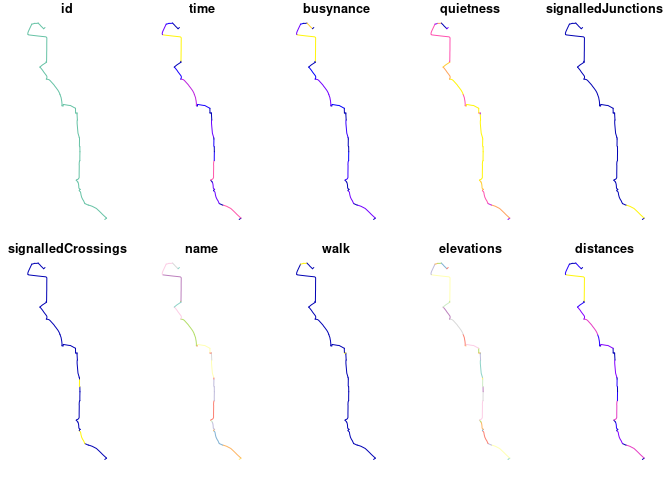

The goal of cyclestreets is to provide a simple R interface to the CycleStreets routing service.
It was split-out from stplanr for modularity.
Installation
You can install the released version of cyclestreets from CRAN with:
install.packages("cyclestreets")Install the development version with devtools as follows:
# install.packages("devtools")
devtools::install_github("cyclestreets/cyclestreets-r")Example
A common need is to get from A to B:
library ("cyclestreets")
# stplanr::geo_code ("leeds rail station")
from = c(-1.544, 53.794)
# stplanr::geo_code ("leeds university")
to = c(-1.551, 53.807)
r = cyclestreets::journey(from, to, "balanced")
sf:::plot.sf(r)
#> Warning: plotting the first 10 out of 32 attributes; use max.plot = 32 to plot
#> all
#> Warning in min(x): no non-missing arguments to min; returning Inf
#> Warning in max(x): no non-missing arguments to max; returning -Inf
To get a key go to https://www.cyclestreets.net/api/apply/
Save the key as an environment varible using export CYCLESTREETS=your_key_here by adding CYCLESTREETS=your_key_here as a new line in your .Renviron file, e.g. with the following command:
usethis::edit_r_environ()Check the map is good with leaflet:
library(leaflet)
p = colorNumeric("RdYlBu", domain = r$busynance, reverse = TRUE)
leaflet(r) %>%
addTiles() %>%
addPolylines(color = ~p(busynance), weight = 20, opacity = 0.9) %>%
addLegend(pal = p, values = ~busynance)
Or tmap, highlighting the recently added ‘quietness’ variable:
library(tmap)
tmap_mode("view")
#> tmap mode set to interactive viewing
tm_shape(r) + tm_lines("quietness", palette = "RdYlBu", lwd = 3, popup.vars = names(r)[-32])See an interactive version of this map, showing all variables per segment, here.
Or mapview:
mapview::mapview(r)
Route types available are: fastest, quietest, balanced. See help pages such as ?journey and https://www.cyclestreets.net/api/ for details.
You can also get streets by LTN status.